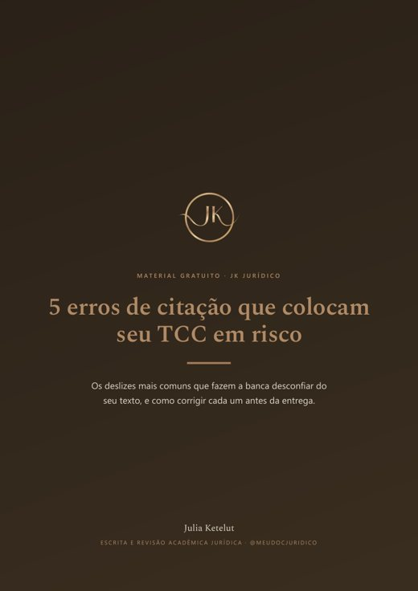

Material gratuito · PDF de 5 páginas
5 erros de citação que colocam seu TCC em risco
Os deslizes que fazem a banca desconfiar do texto, e como corrigir cada um antes da entrega. Pela NBR 10520 e pela NBR 6023, com exemplos do Direito.
- Parafrasear trocando palavras, sem mudar a estrutura
- Citar o autor no texto e esquecer a lista de referências
- Citação direta longa sem recuo
- Citar legislação sem padrão
- Esconder que a citação é de segunda mão

Pronto!
Seu guia está liberado. Uma cópia foi para . Se não aparecer em alguns minutos, confira o lixo eletrônico e a aba Promoções.
Baixar o guia em PDF
Precisa montar uma citação agora? Use o gerador gratuito de citação jurídica.